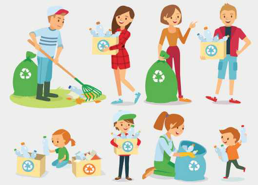
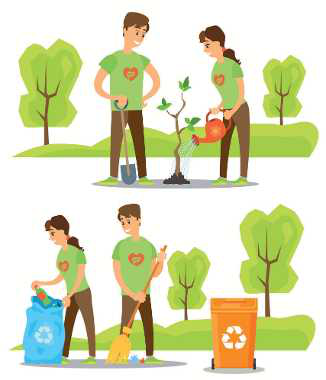

TEMATIKA 5: MJEDISI DHE SHËNDETI4. Piknik në natyrë
Puno në klasë
Ndihmë: si të punoj?
Shkruaj përgjigjen tënde. Mund ta thuash edhe me zë ose t’ia tregosh dikujt që shkruan për ty. Kur të mbarosh, shtyp butonin “Dërgo”.
1.
Shiko figurat.

